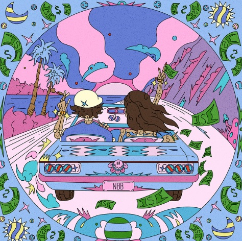
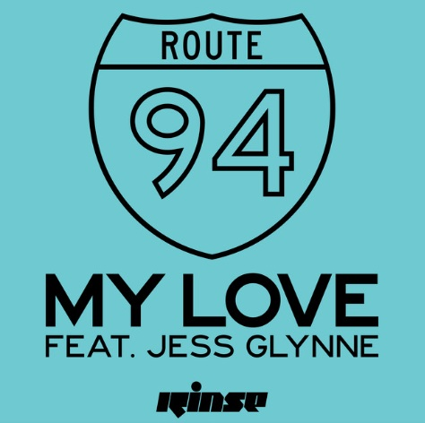
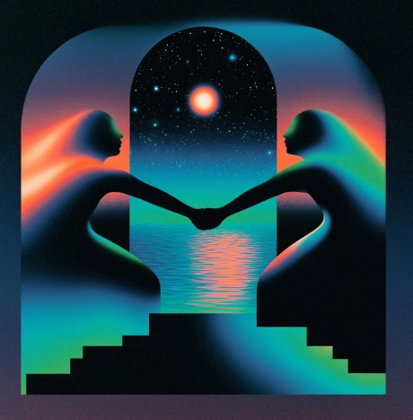
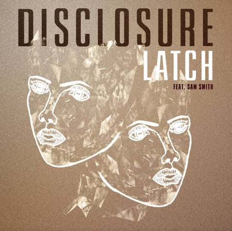
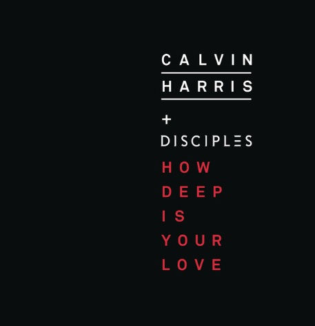

← BACK TO GENRES
Electric pulses. Non-stop energy. Dive into the 128 BPM sanctuary where the kick drum never sleeps. From deep hypnotic grooves to high-octane floor fillers, this is the heartbeat of the nightlife. Lose yourself in the rhythm and let the bass take control
HOUSE




